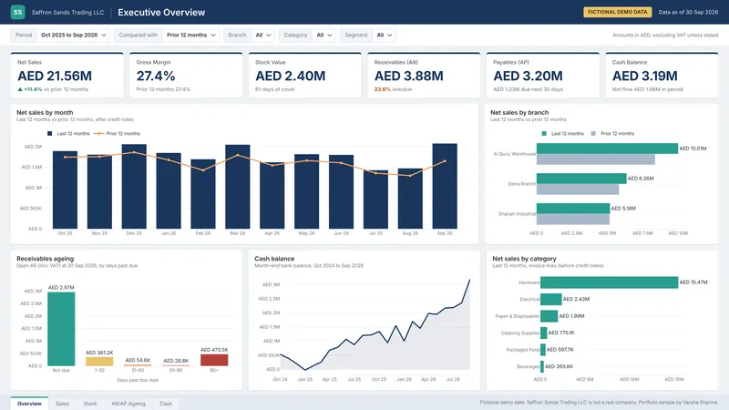
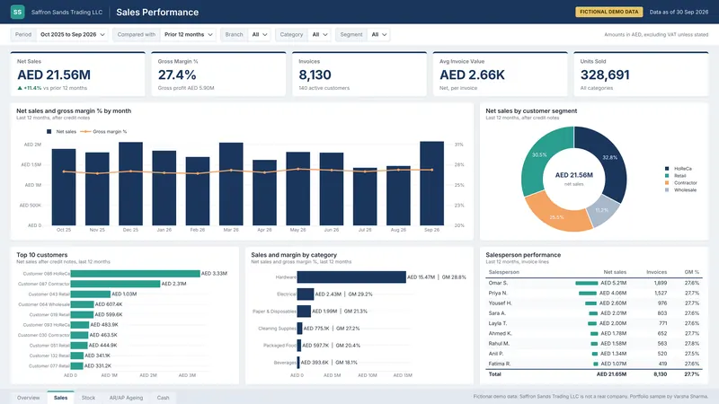
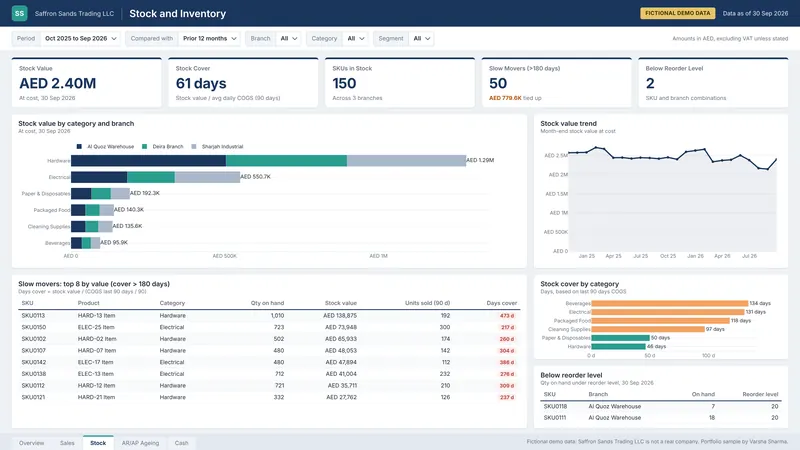
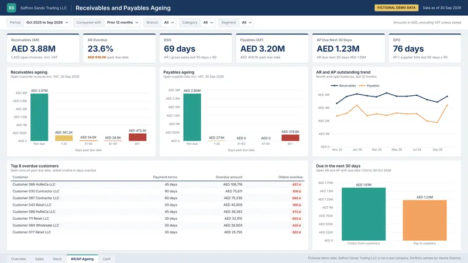
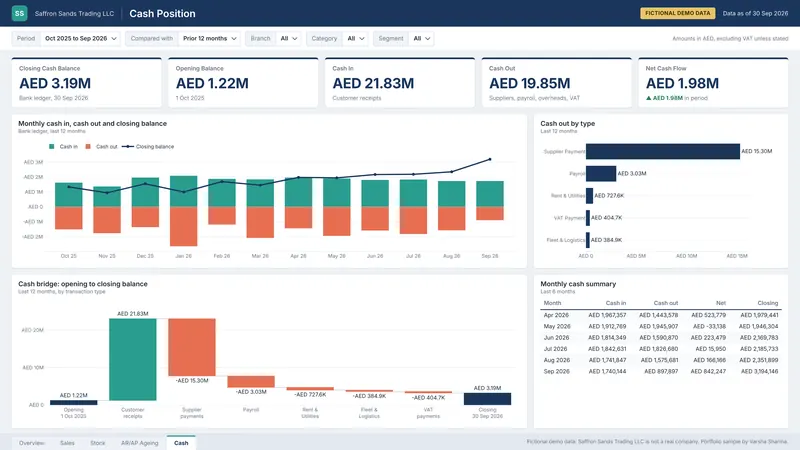

Varsha Sharma
Data, automation and AI solutions for UAE businesses
Data, automation and AI that save your team hours
I build dashboards, automated workflows and AI assistants for UAE businesses, so your numbers are trusted and the manual work disappears.
Based in Dubai, UAE, working with businesses worldwide.

What I build
Three areas of work, often combined in one project. Each starts with your real problem and the tools you already pay for.
-
Data and reporting automation
I turn manual Excel reporting into automated Power BI dashboards built on clean, checked data. I use SQL to pull from your systems, agree clear KPI definitions with you, and add data quality checks so every report matches.
Example: a sales, stock and receivables dashboard that refreshes itself, reconciled against your current reports before go-live.
-
Workflow automation and integrations
I remove repetitive copy-paste work by connecting your tools and automating the steps in between. My main tool is Power Automate (plus simple Power Apps where useful), alongside Python, APIs or Dataiku depending on your setup.
Example: a flow that collects your daily system exports, cleans them and files them in SharePoint for reporting.
-
AI solutions
I build practical AI tools that work with your own data. That includes ask-your-data assistants that answer business questions in plain English, AI summaries of reports and documents, and LLM features added to the systems you already use.
Example: an assistant where a manager types "which customers are overdue this month?" and gets the answer from your figures.
Copilot and similar options depend on your Microsoft licences.
Your data is only used with AI tools after your written approval.
What I've delivered
Selected results from more than four years of work inside large organisations.
- Led a three-person team that built an automated reporting pipeline, cutting report preparation and data comparison time by 85% on a large enterprise migration programme.
- Automated daily data tasks for an enterprise data team with Python and SQL, saving more than six hours of manual work every day and lifting team efficiency by 25%.
- Built Power BI operational dashboards that gave managers live insight for faster, better-informed decisions.
- Built an automated data integration that moves more than 10 million records a month between two business systems without manual handling.
- Rebuilt data pipelines to run 40% faster, with automated quality checks that catch errors before they reach a report.
- Built AI assistants that help business users find answers in their data and documents.
- Improved a fraud detection model for a large finance team, contributing to a 14% drop in fraud incidents.
From manual work to systems that run themselves
Many UAE businesses, especially in trading and distribution, run on an accounting system plus a lot of Excel, email and WhatsApp. The data is there, but people spend hours moving it around.
Sound familiar?
- Reporting: sales, stock, receivables and cash figures are re-keyed into Excel every month.
- Workflows: approvals, reminders and updates depend on someone remembering to send them.
- Customers: the team answers the same "where is my order?" messages all day.
- Insight: month-end reports take days, and different reports show different numbers.
- When the one person who owns the spreadsheet is away, everything stops.
What changes
- One trusted dashboard that refreshes automatically from your existing systems.
- Alerts, emails and approvals that run on a schedule or when something changes.
- Routine questions answered instantly, with anything unusual passed to a person.
- A written monthly summary that highlights what changed and what needs attention.
- Numbers checked against your current reports before anything goes live.
- Everything lives in your own Microsoft 365 and systems, with handover notes.
Example Power BI dashboard
Pages from an example Power BI dashboard modelled on a UAE trading company, showing the kind of view I build. Select an image to enlarge it.
-
Example dashboardOverview. Headline KPIs for sales, margin, stock, receivables, payables and cash. -

Example dashboardSales. Net sales against last year, margin by category, top customers and salespeople. -

Example dashboardStock. Stock value by branch and category, days of cover, slow movers and reorder alerts. -

Example dashboardReceivables and payables. Ageing buckets, overdue customers and amounts due in the next 30 days. -

Example dashboardCash. Monthly cash in and out, closing balance and an opening to closing cash bridge. -
Your dashboard, your KPIs
This example shows the kind of pages a trading business usually needs. Your own dashboard is designed around your systems, your branches and the questions you ask every week.
Book a free 20-minute check


Solution showcase
Four working solutions to explore.
-
Distributor sales and stock automation
Best sellers run out unnoticed.
Daily reorder alerts and a weekly email.
View solution -
Receivables and cash-flow monitor
Late payers squeeze cash.
A daily chase list and cash forecast.
View solution -
AI report summariser
Monthly commentary takes hours.
Summaries written from the numbers.
View solution -
Order-status chatbot
Same order questions, all day.
Instant answers, any time.
View solution
How it works
Four clear steps. You know the scope and the price before any build work starts.
-
Step 1
Free 20-minute check
A short call. You tell me how the work is done today, and I tell you honestly where the time goes and whether automation or AI makes sense. No obligation.
-
Step 2
Paid diagnostic
I map the current process, look at extracts of your data and systems, and agree the goals with you. You receive a current-state map, a data and licence readiness check, and a fixed quote for the build.
-
Step 3
Fixed-price build
Agreed scope, fixed price. I build the solution in your environment, test it with your real data and check the results with you before handover.
-
Step 4
Optional care plan
A monthly plan for monitoring, fixes, small changes and new requests, with clear limits on what each month includes.
About me
I build data, automation and AI solutions for businesses. Every project starts with two questions: where is your team losing time, and which numbers do people not trust?
I have spent more than four years doing this inside large organisations. I have led a small team that cut report preparation and data comparison time by 85% on a major migration programme. I have automated daily data tasks that saved more than six hours of manual work every day, and built AI assistants that help business users find answers in their data and documents.
I now bring the same approach to SMEs in the UAE. I work with the tools you already have, such as Excel, your accounting system and Microsoft 365, and I automate the routine steps with Power Automate. I check every number before it reaches a dashboard, and I write down how everything works so your team is never stuck. You deal with me directly, from the first call to handover, with the scope and price agreed upfront.
Education: M.Tech in Computer Science.
Experience and skills
- Data quality
- Data governance
- Business intelligence
- Power BI
- SQL
- Power Automate
- Dataiku
- Python
- Business analysis
- Process automation
How I handle your data
- I work inside your Microsoft 365 and systems, using an account you create and control.
- I ask only for the data needed for the agreed work.
- Your data is not used with AI tools without your written approval.
- When the project ends, my access is removed and working copies are deleted.
Book a free 20-minute check
Tell me how the work is done today. I will tell you honestly whether data, automation or AI can help, and where to start.
Based in Dubai, UAE, working with businesses worldwide.